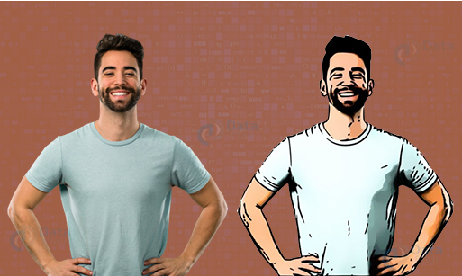

Joseph Lee, Kelsey Henson, Lydon Puzon, Roger Nhan, Sabrina Chua
Fall 2020 CS 4476 Computer Vision: Class Project
Georgia Tech
Please see this for an example of how to lay out the various details of your project. You may need to provide more details than this, beause you will not be submitting an associated paper to accompany the webpage. So the page should be self-contained
The goal of this project is to stylize an inputted image to appear like a cartoon image. To accomplish this, we will detect the prominent shapes within the image and add an outline to them, as well as normalize the color groups of the image, narrowing each object to a pallet of a predetermined amount of colors. Additionally, we will apply minimal edge outlines within the image to make the primary textures more prominent.
Teaser figure

Introduction
Motivation behind the problem you are solving, what applications it has, any brief background on the particular domain you are working in (if not regular RBG photographs), etc. If you are using a new way to solve an existing problem, briefly mention and describe the existing approaches and tell us how your approach is new.
Approach
Normalizing Colors
Our approach for altering the colors will include normalizing the color pallet using hue saturation and grouping shade colors together. To normalize the pallet, we will choose a predefined set of colors that generalizes only a few colors to each object. This choice will be made using hue saturation techniques. We will then group together these colors by the objects they belong to in order to reduce the amount of color variation across the image.
Reinforcing Outlines
In order to create a hard outline of objects within the object, such as in a cartoon styled image, we will smooth and reinforce the outlines of objects within the images. We will smooth the outlines to be straighter and more defined to reduce excessive corners and line complexity. The techniques used in this will be Canny Edge Detection to first find the object lines and thresholding to detect and increase the thresholds of the images to a larger pixel value.
Smooth Textures
To recreate the textures of a cartoon, we will detect highly textured areas within the images and either replace those selected texture patterns with a reduced image bank of smoother textures or apply a median filter to blur the image slightly to reduce the textures. Our team will decide on the final technique utilized here through experimentation on the image to test for best results.